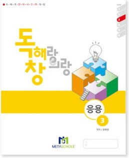
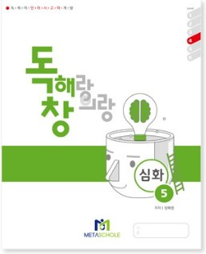
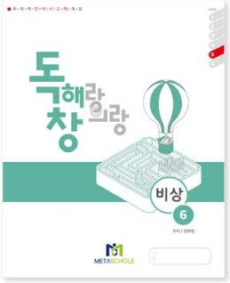
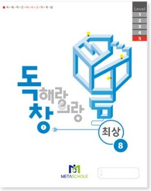
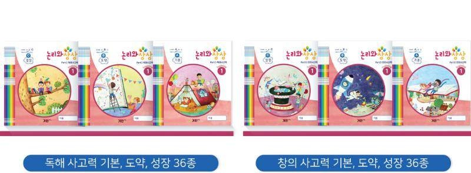
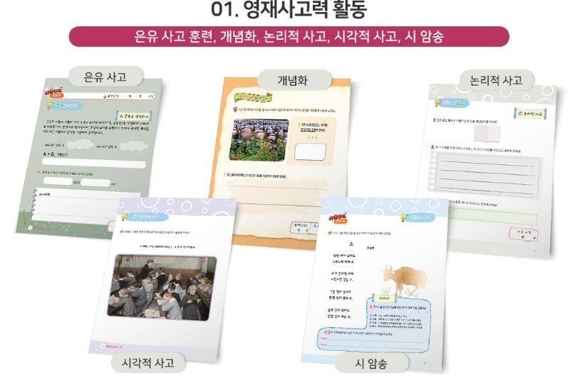
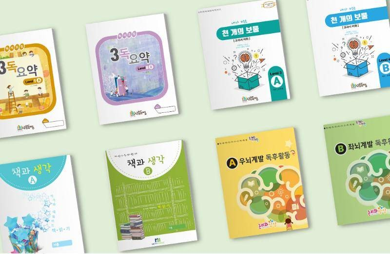
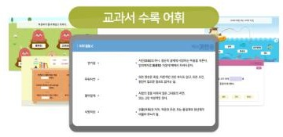

메타스콜레
메타스콜레독해 프로그램
메타스콜레 독해 프로그램
메타스콜레가 20여 년간 연구해 만든 독해 · 사고력 · 독서 프로그램과 교재입니다. 모든 과정은 레벨 테스트 결과에 따른 수준별 수업이며, 강의를 듣는 수업이 아니라 교재로 스스로 훈련하는 코칭 수업입니다.
한눈에 보기
오프라인 교재 훈련과 온라인 독서 · 독해 프로그램을 함께 운영합니다. 학생에게 맞는 과정은 입학 테스트 후 상담에서 정합니다.
| 프로그램 | 무엇을 훈련하나요 | 대상 | 구성 |
|---|---|---|---|
| 독해랑 창의랑 | 독해력 · 사고력 · 창의력 특화 훈련 | 예비초1 ~ 고등 | 입문 · 필수 · 응용 · 심화 · 비상 · 최상 6단계 |
| 논리와 상상 | 초등 독해사고력 · 창의사고력 | 초등 | 기본 · 도약 · 성장, 72권 |
| 천개의 보물 | 교과서 어휘 훈련 교재 | 초등 ~ | 10종 |
| 3독 요약 | 비문학 세 번 읽고 요약하기 | 초등 ~ | 20종 |
| 몰입독서법 | e-Book 집중 독서 · 두뇌계발 | 초3 ~ 고3 | 기본훈련 → 도서훈련 → 도서적용 |
| 독해력 훈련 | 지문 정독 후 문제은행 풀이 | 초2 ~ 고3 | 독해 다지기 · 교과서 독해 · 비문학 독해 |
| 어휘력 훈련 | 교과서 수록 어휘 · 필수 한자 | 초1 ~ 고3 | Level 1 ~ 10 |
독해랑 창의랑
메타스콜레에만 있는 독해 전문 프로그램입니다. 아이가 스스로 읽고 풀고 채점하며, 틀린 문제는 지문을 다시 읽고 고칩니다. 필수 과정은 초2까지, 이후 중 · 고등까지 이어집니다.






논리와 상상 · 초등 사고력 훈련
읽고 요약하는 훈련으로 자기주도 학습능력을 키우는 초등 사고력 교재입니다.

독해사고력 · 창의사고력을 매월 각 1권씩 훈련합니다. 기본 · 도약 · 성장 레벨마다 12권, 모두 72권입니다.
한 권에 40 ~ 50분. 스스로 학습한 뒤 제출하면 선생님이 첨삭합니다.
Reading 폭넓은 독서 → Summary 요약과 글쓰기 → Problem-solution 문제 해결 → Apply 적용

천개의 보물 · 3독 요약 · 부교재
정규 교재와 함께 어휘 · 요약 · 독후 활동을 채워 주는 메타스콜레 부교재입니다.

천개의 보물
교과서에 나오는 어휘를 익히는 어휘 훈련 교재, 10종.
3독 요약
비문학 글을 세 번 정독하고 핵심을 요약하는 교재, 20종.
책과 생각 · 두뇌계발 독후활동
책을 읽은 뒤 생각을 정리하고 우뇌 · 좌뇌를 고루 쓰는 독후 활동 교재.
책 읽는 거인 · 온라인 독서 · 독해 훈련
메타스콜레의 온라인 프로그램입니다. 학원 수업과 함께 집중력 · 독해력 · 어휘력을 기릅니다.
몰입독서법
300 ~ 400여 권의 e-Book을 읽으며 집중력과 기억력을 기르고, 빠르고 정확하게 읽는 두뇌계발 독서 훈련입니다. 기본훈련 → 도서훈련 → 도서적용.
독해력 훈련
다양한 지문을 정독한 뒤 문제를 풀고, 틀린 문제를 분석해 다시 풉니다.
- 독해 다지기 · 문학 지문
- 교과서 독해 · 국어 · 사회 · 한국사 등 교과서 지문
- 비문학 독해 · 수능 모의고사 비문학 지문

어휘력 훈련
교과서 수록 어휘와 필수 한자를 익히기 → 활동 → 테스트 → 반복 훈련으로 완전히 익힙니다.
프로그램 소개와 이미지는 메타스콜레 본사 자료입니다. 학생별 운영 과정은 상담에서 안내해 드립니다.